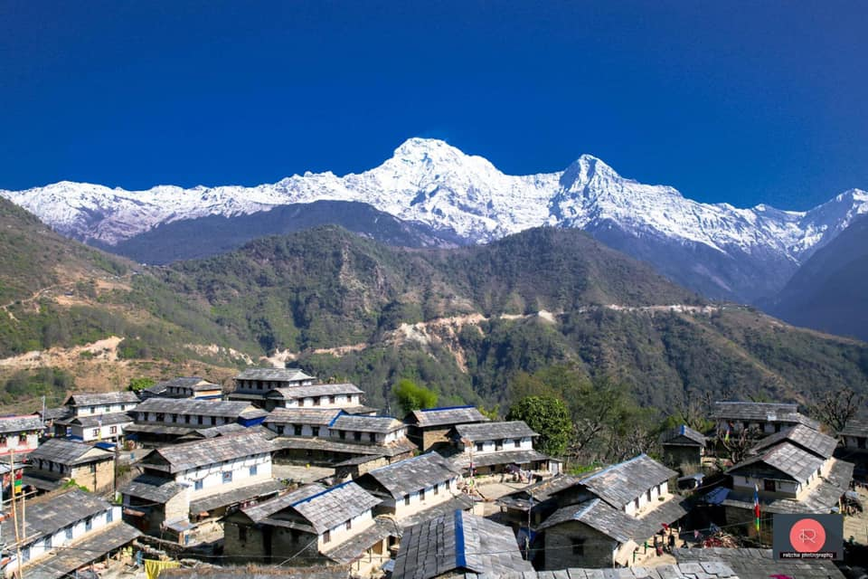
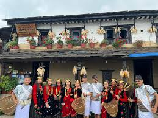
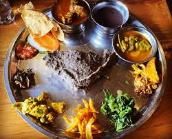

"Ghandruk: Where Mountains Whisper and Culture Thrives"
 Ghandruk is a picturesque village nestled in the Annapurna region of Nepal, known for its breathtaking mountain views and rich Gurung culture. Located at an altitude of approximately 2,012 meters (6,601 feet), it serves as a gateway to popular trekking routes like the Annapurna Base Camp and Poon Hill. The village is surrounded by lush forests, terraced fields, and traditional stone houses, creating a serene and timeless atmosphere. Visitors are greeted with stunning vistas of Annapurna South, Machhapuchhre (Fishtail Mountain), and Hiunchuli, making it a paradise for nature lovers and photographers alike.
Ghandruk is a picturesque village nestled in the Annapurna region of Nepal, known for its breathtaking mountain views and rich Gurung culture. Located at an altitude of approximately 2,012 meters (6,601 feet), it serves as a gateway to popular trekking routes like the Annapurna Base Camp and Poon Hill. The village is surrounded by lush forests, terraced fields, and traditional stone houses, creating a serene and timeless atmosphere. Visitors are greeted with stunning vistas of Annapurna South, Machhapuchhre (Fishtail Mountain), and Hiunchuli, making it a paradise for nature lovers and photographers alike.
Ghandruk
Beyond its cultural charm, Ghandruk is a haven for trekkers and adventure seekers. The trails leading to and from the village are lined with rhododendron forests, waterfalls, and scenic viewpoints. The trek from Nayapul to Ghandruk is a popular route, offering a mix of gentle ascents and breathtaking landscapes. The village also serves as a resting point for those heading toward the Annapurna Base Camp, making it a crucial stop for acclimatization. Whether one is an experienced trekker or a casual traveler, Ghandruk’s trails promise an unforgettable journey through Nepal’s natural beauty.
Ghandruk Village
Ghandruk is a culturally rich village in Nepal, primarily inhabited by the Gurung community, known for their deep-rooted traditions and vibrant heritage. The Gurung people have preserved their customs for generations, showcasing their unique way of life through festivals, rituals, and daily practices. Visitors to Ghandruk can experience traditional Gurung hospitality, which includes warm welcomes, folk dances, and local cuisine. The village also has a Gurung Museum, where artifacts, tools, and historical items provide insight into their history and lifestyle. Ghandruk’s trails promise an unforgettable journey through Nepal’s natural beauty.
Culture
Traditional snacks and homemade delicacies also play an important role in Ghandruk’s cuisine. Sel Roti, a ring-shaped deep-fried rice bread, is a common festive treat, often prepared during special occasions. Another local favorite is Gurung Bread, a thick, fried bread that pairs wonderfully with honey or curry. The villagers also produce Yak Cheese, a unique Himalayan dairy product known for its rich, slightly salty taste, perfect for snacking or adding to meals. These foods highlight the resourcefulness and culinary traditions passed down through generations.
Famous Food